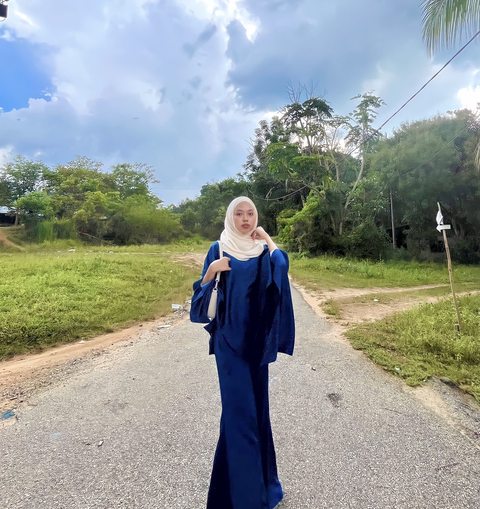

|  | ||
| Name | Nur Aida Suraya Binti Azizie | |
|---|---|---|
| Age | 21 Years old | |
| Gender | Girl | |
| Race | Malay | |
| Nationality | Malaysia | |
| State | Kedah | |
| City | Alor Setar | |
| Hobby | Listening a song | |
All ABOUT ME WAS IN HERE!!
I was born at Hospital Baling, Kedah but I was raised in other states which is Alor Setar.
Talked about my hobby, I'm always reading my fav songs such as song from Rizky Febian, Bruno Mars, SZA, Justin Bieber, Ariana Grande and The weekend. My fav genre is always come from pop, indie and jazz. Not only that, I'm also loved watching a movie especially thriller and horror. If I got time I will going out to cinema with my friends. But now since im at campus I'm only watched movie at campus when im free because im quite busy with classes.
Top 5 Song Of my fav singer Bruno Mars
- 24k Magic
- The Lazy Song
- Grenade
- When I Was Your Man
- Talking To The Moon
Top 5 my fav Movie
- Polis Evo 2
- The Nun
- Qudrat
- Jumanji:The next Level
- Annabell
Some of My Favourite Song
- Rizky Febian - Cuek
SZA - Low
Justin Bieber - Love Yourself
Ariana Grande - 34+35
The Weekend - Reminder